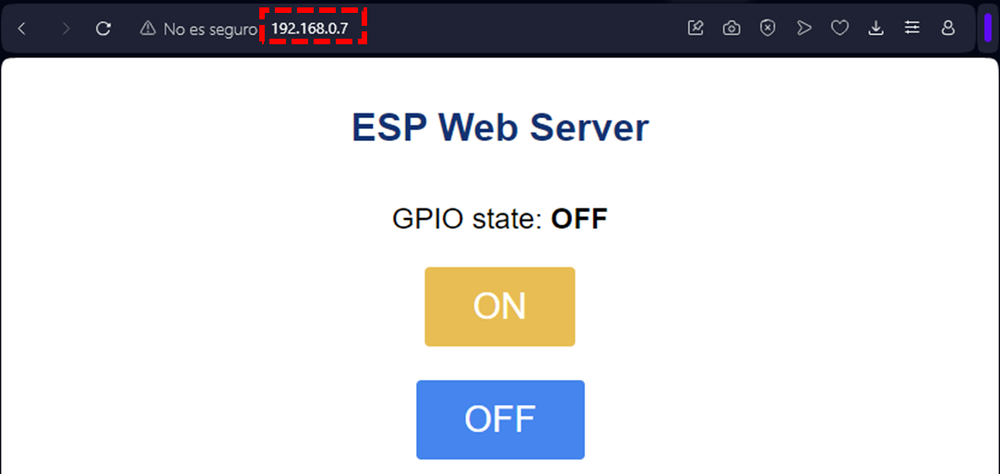
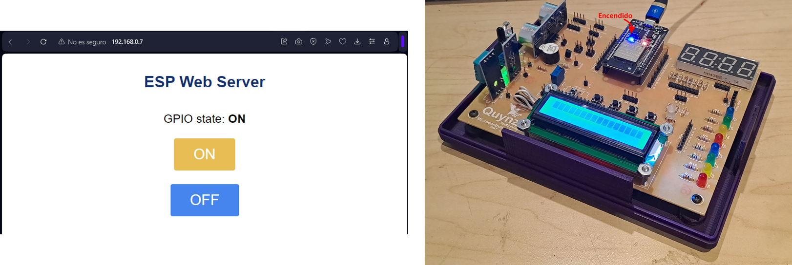

Ejercicio 4-2: Crear servidor web en ESP32 e interfaz web
Descripción
Todas las páginas web que se ven en internet están alojadas en un servidor, que continuamente esperan conexiones entrantes de clientes. Usando Micropython, con el Ejercicio 4-2: Crear servidor web en ESP32 e interfaz web se va a aprender a crear un servidor Web en el cual se muestre una interfaz sencilla en cualquier navegador.
Para este ejercicio se necesita el Entrenador ESP32, ¡el cual puede ser adquirido en este link al mejor precio!

Código
Para este ejercicio se necesitará el archivo:
- boot.py: Script de Python especial que siempre se ejecuta al encender el ESP32. Contiene el código para conexión a una red WiFi específica
- main.py: Script principal de Python. Contiene el código para crear el servidor web y comunicarse con los clientes que se conecten.
- html_led.html: Texto HTML para interfaz gráfica del ejercicio.
boot.py:
import network from machine import Pin p2 = Pin(2,Pin.OUT) def do_connect(ssid,pwd): wlan = network.WLAN(network.STA_IF) wlan.active(True) if not wlan.isconnected(): p2.off() print('connecting to network...') wlan.connect(ssid, pwd) while not wlan.isconnected(): pass p2.on() do_connect("XXX","YYY")
main.py:
from machine import Pin import socket p2 = Pin(2,Pin.OUT) def web_page(): if p2.value() == 1: gpio_state="ON" else: gpio_state="OFF" f = open('html_led.html') text = f.read() f.close() html = str(text) html = str(html).replace("%led", gpio_state) return html # Create a Socket s = socket.socket(socket.AF_INET, socket.SOCK_STREAM) # s.setsockopt(socket.SOL_SOCKET, socket.SO_REUSEADDR, 1) # Bind the socket to a IP Address and Port s.bind(('',80)) # Accept maximum 5 connections s.listen(5) while True: # When a client connects, the connection is accepted conn, addr = s.accept() print('Got a connection from %s' % str(addr)) # Get the received request of the client request = conn.recv(1024) request = str(request) print('Content = %s' % request) # Find commands of client to turn ON/OFF the led led_on = request.find('/?led=on') led_off = request.find('/?led=off') if led_on == 6: print('LED ON') p2.value(1) if led_off == 6: print('LED OFF') p2.value(0) # Generate the HTML text of Web Site response = web_page() # Send the responde to client following HTML protocols conn.send('HTTP/1.0 200 OK\r\nContent-type: text/html\r\n\r\n') conn.sendall(response) # Close Socket conn.close()
html_led.html:
<!DOCTYPE HTML> <html> <head> <title>ESP Web Server</title> <meta name="viewport" content="width=device-width, initial-scale=1"> <link rel="icon" href="data:,"> <style> html{font-family: Helvetica; display:inline-block; margin: 0px auto; text-align: center;} h1{color: #0F3376; padding: 2vh;}p{font-size: 1.5rem;} .button{display: inline-block; background-color: #e7bd3b; border: none; border-radius: 4px; color: white; padding: 16px 40px; text-decoration: none; font-size: 30px; margin: 2px; cursor: pointer;} .button2{background-color: #4286f4;} </style> </head> <body> <h1>ESP Web Server</h1> <p>GPIO state: <strong> %led </strong></p> <p><a href="/?led=on"><button class="button">ON</button></a></p> <p><a href="/?led=off"><button class="button button2">OFF</button></a></p> </body> </html>
Explicación paso a paso
boot.py
Este es el mismo código definido en el Ejercicio 3-2: Conectarse a red WiFi, en el cual se da una explicación paso a paso. Se debe tener en cuenta que se debe cambiar el contenido con la información de la red WiFi propia:
- XXX: Nombre de su red WiFi
- YYY: Contraseña de su red WiFi
main.py
Con la teoría explicada en la sección anterior, se procede a explicar el código desarrollado:
En primer lugar importamos la librería socket y la clase machine.Pin. La clase Pin es usada para controlar los pines GPIO (General-purpose Input-Output) del ESP32:
from machine import Pin import socket
Luego un objeto llamado p2 con clase Pin, el cual se va a vincular con el GPIO2 del ESP32 con una configuración en modo salida (Pin.OUT). Para las tarjetas ESP32, el GPIO2 está conectado al LED interno:
p2 = Pin(2,Pin.OUT)
Se crea una función llamada web_page. En este se llama la función p2.value() para determinar el estado LED p2: si está encendido entonces se define la variable gpio_state como "ON", en caso contrario como como "OFF". Luego se procede a leer el archivo html_led.html que contiene la página web a mostrar en el servidor web, se convierte en un variable de tipo String y se usa la función html.replace() para reemplazar el string %led por el valor de la variable gpio_state. Por último se retorna la página web modificada:
def web_page(): if p2.value() == 1: gpio_state="ON" else: gpio_state="OFF" f = open('html_led.html') text = f.read() f.close() html = str(text) html = str(html).replace("%led", gpio_state) return html
Siguiendo el diagrama de flujo para la creación de sockets, primero se crea el objeto socket.socket(), donde socket.AF_INET se utiliza para definir el socket en la familia de direcciones IPv4, socket.SOCK_STREAM se utiliza para definir el socket como tipo TCP. Luego se vincula el socket a la dirección web del dispositivo al puerto 80. Y se configura el socket para recibir máximo 5 conexiones de manera simultánea:
# Create a Socket s = socket.socket(socket.AF_INET, socket.SOCK_STREAM) # Bind the socket to a IP Address and Port s.bind(('',80)) # Accept maximum 5 connections s.listen(5)
Se procede a habilitar al socket a aceptar las conexiones entrantes de clientes que accedan a la dirección web especificada anteriormente y se imprime en consola la dirección del cliente:
while True: # When a client connects, the connection is accepted conn, addr = s.accept() print('Got a connection from %s' % str(addr))
Luego se recibe los datos del socket enviados por el cliente, con un tamaño máximo de 1024 bits, se convierte en String y se imprime en consola:
# Get the received request of the client
request = conn.recv(1024)
request = str(request)
print('Content = %s' % request)
La página web tiene dos botones:
- Botón encendido (ON): Que envía el comando /?led=on
- Botón apagado (OFF): Que envía el comando /?led=off
Cuando el cliente presiona alguno de los dos botones el cliente envía una solicitud al servidor que contiene el comando correspondiente.
Con la función request.find("XXX") se busca el string "XXX" dentro del string "request". En caso que el valor de esta búsqueda sea igual a 6 (si se encontró) entonces se cambia el estado del LED mediante la función p2.value(i):
# Find commands of client to turn ON/OFF the led
led_on = request.find('/?led=on')
led_off = request.find('/?led=off')
if led_on == 6:
print('LED ON')
p2.value(1)
if led_off == 6:
print('LED OFF')
p2.value(0)
Luego de definir la función web_page, se llama y este automáticamente va a generar el html de la página web con el valor actual del led:
# Generate the HTML text of Web Site
response = web_page()
Después se envía los datos requeridos por el navegador del cliente para mostrar la página web (Encabezado + Contenido):
# Send the responde to client following HTML protocols
conn.send('HTTP/1.0 200 OK\r\nContent-type: text/html\r\n\r\n')
conn.sendall(response)
Por último, se cierra el socket creado para el cliente:
# Close Socket
conn.close()
Testeo en ESP32
Primero, se realiza la conexión del ESP32 a nuestro ordenador mediante USB:

Luego de subir los archivos boot.py y html_led.html al dispositivo ESP32, en consola se va a mostrar:

Se debe anotar el campo IP address para los siguientes pasos.
Luego ejecutamos el script main.py mediante el software Thonny. Y con un computador o dispositivo móvil que esté conectado en la misma red WiFi que el ESP32, por medio de un navegador se debe conectar a la dirección web anotada en pasos anteriores:

Si presionamos en botón ON se encenderá el LED de ESP32 como se muestra a continuación:
